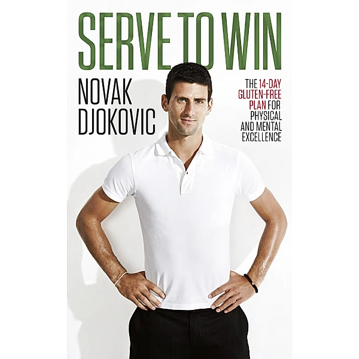
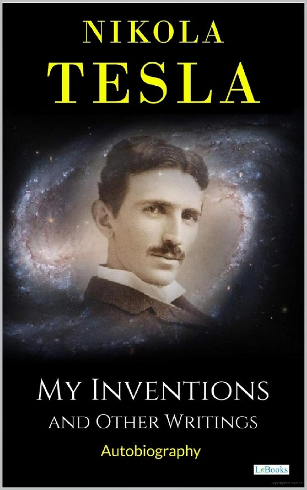

My favourite books:
- The Alchemist

- Serve to Win
- Nikola Tesla My Inventions
The Alchemist is a novel by Brazilian author Paulo Coelho which was first published in 1988. Originally written in Portuguese, it became a widely translated international bestseller
Lessons: The constant theme in The Alchemist is to pursue your dreams by following what your heart desires. During the young boy's journey, he learns to listen to the heart and to follow the language of omens. With each passing obstacle and hurdle that the young boy encounters, there is a lesson to learn.
Setting: Setting (place) The main plot of the alchemist takes place in the Spanish pastures, the Spanish town of Tarifa, the city of Tangier in North Africa, and the Sahara desert. ProtagonistThe novel's protagonist is Santiago, an Andalusian shepherd.
In 2011, Novak Djokovic had what has been called the greatest single season ever by a professional tennis player. He won ten titles, three Grand Slams and 43 consecutive matches. Remarkably, less than two years earlier, this champion could barely complete a tournament. How did a player once plagued by aches, breathing difficulties and injuries on court suddenly become the number-one tennis player in the world? The answer is astonishing: he changed what he ate.
Nikola Tesla was one of the most brilliant and daring inventors and visionaries of his time. My inventions is Tesla's autobiography, with focus on his major discoveries and innovations, including the rotating magnetic field, the magnifying transmitter, and the Tesla coil. His research laid much of the groundwork for modern electrical and communication systems, and his impressive accomplishments include development of the alternating-current electrical system, radio, the Tesla coil transformer, wireless transmission, and fluorescent lighting. His story, in his own words, is told with great sincerity and originality.